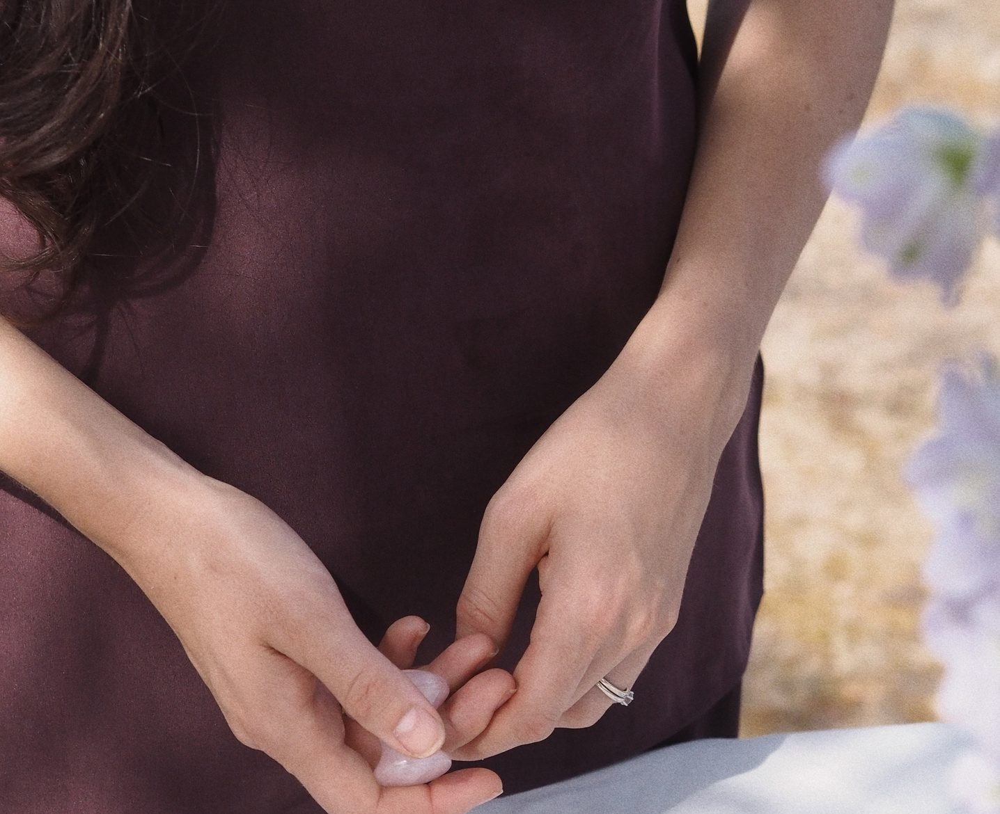

01Sábado 12 dic · Bizi Café, Bilbao
The Christmas Ritual
Una tarde para hacer tu corona de Navidad con Olaia, de Verbena, y aprender un ritual de automasaje glow con Sarai. Con merienda incluida.
Ver el taller
02Presencial · Grupos reducidos
Piezas de ritual y masaje facial
Cómo funciona tu piel y qué hacer con las manos: la base científica, la técnica de masaje y una demostración de las piezas de ritual.
Ver el taller